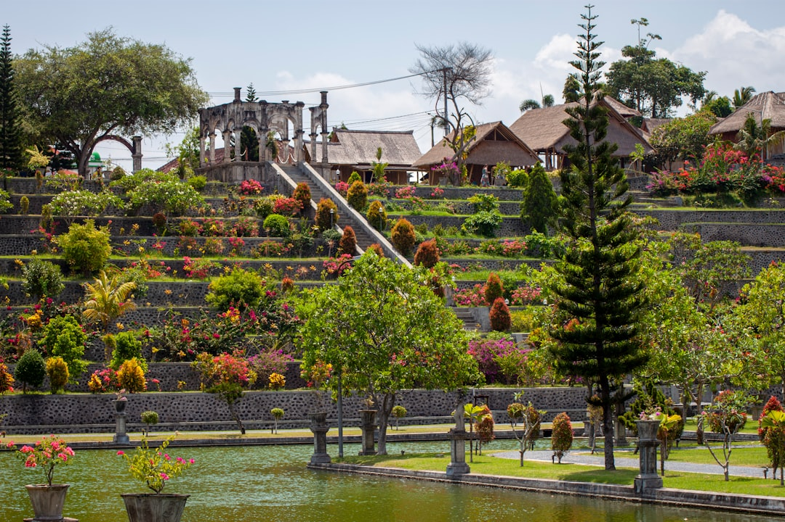

A retained pool project is mainly a site coordination problem: the pool shell, wall, drainage, access route and finished levels need to be considered together before layout choices become hard to change. The source page identifies 6 project pathways and 4 early interfaces: levels, water, access and construction scope. Bring photographs, level-change notes, access dimensions, drainage observations and any surveys or reports to the first project review.
For Brisbane homeowners comparing pool retaining walls options, the useful starting point is how the proposed pool, retained ground, drainage path and machinery access will work as one site arrangement.
Pool Retaining Walls Explained
Pool Retaining Walls Brisbane frames these projects around the site rather than around a stock pool package. That is a useful editorial lens for sloping blocks, restricted access yards and pool positions where the shell, wall, drainage and surrounding levels cannot be planned separately.
The early question is not simply where the waterline looks best. The pool edge, retained garden, walking routes and construction route all need to make sense after excavation and reinstatement. If a finished surface hides an unresolved level change, the later options become narrower and more expensive to test.
A practical first review should capture the intended pool location, nearby structures, existing walls, visible level changes, access width and where water currently moves during rain. A rough sketch and photographs are enough to start a clearer conversation, with qualified confirmation following where the wall, approval path or structural input requires it.
Who This Applies To
This guide applies to Brisbane owners considering a concrete pool on a site where retained ground is part of the design problem. The source page is especially relevant to sloping sites, established yards with limited access, and addresses where an existing wall may affect a new pool or renewal plan.
- Owners planning a new concrete shell beside retained ground.
- Owners renewing an existing pool and wall arrangement.
- Owners trying to compare written proposals that include different exclusions.
- Owners preparing for project-specific approval, engineering or drainage questions.
It is less useful for a flat, unconstrained pool site where no retained level, access constraint or drainage interface is involved. Even then, the same written-scope discipline helps avoid vague assumptions about reinstatement, barriers and surrounding surfaces.
The Four Interfaces To Resolve Early
The source page names 4 interfaces that decide whether the finished outdoor space feels resolved: levels, water, access and construction scope. Each one changes the next. A pool level can affect retained height. New hard surfaces can alter runoff. Machinery access can influence excavation sequence and reinstatement. A missing exclusion can shift responsibility after work has started.
Levels should be tested across the pool edge, wall, garden and movement routes. Water should be mapped before excavation and new surfaces change the yard. Access should be checked against the actual route for machinery and materials, not a general assumption that the backyard is reachable.
For broader Brisbane context on the same topic, this Brisbane pool and retaining wall planning guide keeps the focus on access, changing ground and site-specific approval questions.
Comparing New Work And Renewal
A new pool beside retained ground usually starts with placement, levels and excavation sequence. An existing wall renewal starts with the condition, construction, drainage and relationship of that wall to the proposed pool outcome. The source page treats both as specialist pathways because they ask different questions before a scope is fixed.
For new work, ask how the concrete shell, surrounds, safety barriers and retaining details will be coordinated. For renewal, ask what is known about the existing wall, what still needs assessment, and whether the proposed pool work changes load, drainage or finished levels around it. Do not turn those questions into design assumptions without project-specific advice.
Written proposals should make responsibilities and exclusions visible. If one proposal includes drainage coordination, reinstatement assumptions or technical input while another leaves them unclear, the cheapest headline comparison may not describe the same job.
What To Bring To A Review
The strongest preparation is simple site evidence. Bring photographs of existing walls, steps, slopes, fences, nearby structures and the likely machinery route. Note the intended pool position, the main changes in level, visible drainage paths and any areas where water collects. Include surveys or reports already available.
The source page says photos can follow once the right project conversation begins, but having them early helps separate layout preferences from site constraints. Access dimensions matter because excavation, material movement and reinstatement depend on the actual path through the property.
Also ask what needs qualified confirmation. Approval requirements depend on the wall, site and proposed work, so Brisbane City Council guidance and project-specific advice should be checked before treating an idea as buildable.
- Map the site. Mark the intended pool location, existing walls, level changes, drainage paths and nearby structures before comparing layouts.
- Check access. Measure the actual route for machinery and materials, including any narrow side paths or reinstatement areas.
- Separate assumptions. Ask each provider to state inclusions, exclusions and required technical input in writing.
- Confirm approvals. Check council guidance and project-specific advice where the wall, site or proposed work raises approval questions.
| Scenario | Main planning focus | Questions to ask early |
|---|---|---|
| New concrete pool beside retained ground | Pool placement, excavation sequence, finished levels, drainage and surrounds | How will shell, retaining, access, barriers and water movement be coordinated in one written scope? |
| Existing pool or wall renewal | Condition of the current wall, drainage, construction and relationship to the proposed pool outcome | What must be inspected or confirmed before deciding whether renewal, replacement or redesign is appropriate? |
Common questions
Do pool-adjacent retaining walls need approval in Brisbane? Requirements depend on the wall, site and proposed work. The source page says Brisbane City Council guidance and project-specific advice should be checked.
How does a sloping block change pool planning? The pool level, excavation approach, machinery access, drainage and retained ground need to be considered together before the construction scope is fixed.
Can an existing wall affect a new pool? Yes. Its condition, construction, drainage and relationship to the proposed pool may affect the work, so the actual wall and address need project-specific assessment.
What evidence helps at the first review? Bring the intended pool location, photographs of existing walls and level changes, access dimensions, drainage observations and any surveys or reports already available.
This guide covers practical site planning for retained pool projects where levels, drainage, access and written scope need early attention.